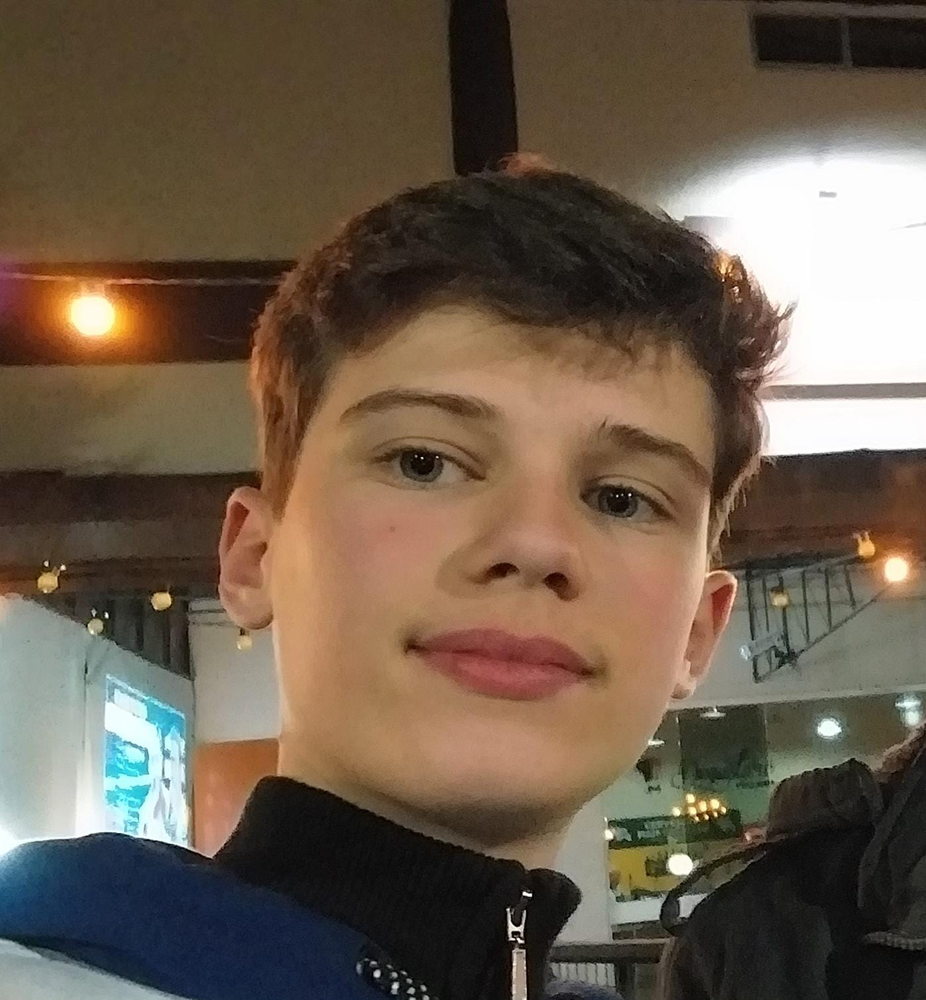

|  | Gustavo Borsatto Ritter |
Meu nome é Gustavo Borsatto Ritter, tenho 17 anos e procuro sempre dar o meu melhor, trabalhar, aprender e caminhar em conjunto com a empresa, gosto do ramo tecnológico e das coisas que ele pode nos oferecer, procuro aprender cada dia mais sobre as linguagens de marcação e programação, atualmente estou no primeiro ano do Instituto Federal Catarinense cursando Informática para Internet.
Sou dedicado e procuro vestir a camisa da empresa e crescer com ela, tanto profissionalmente como pessoalmente, sou sempre atencioso, gosto de novos desafios e de aprender coisas novas que envolvam o meu ofício, demonstrar serviço, e principalmente amor e carinho pela profissão.